Najprv Vás vypočujeme. Potom liečime.
Dôkladné vyšetrenie, presná diagnostika a terapia, ktorej rozumiete. Pomáhame pri bolestiach chrbtice a kĺbov, deťom, športovcom aj pred operáciou a po nej.
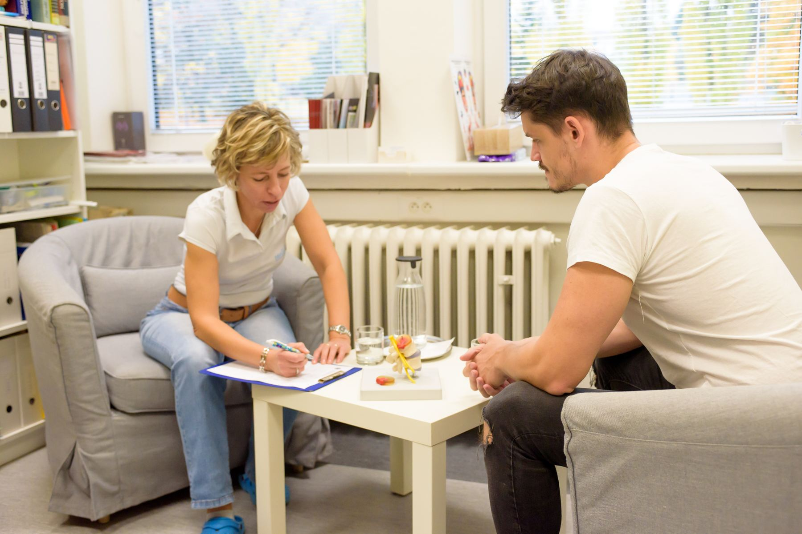
S čím Vám môžeme pomôcť?
Nemusíte poznať názvy metód. Vyberte, čo sa Vás týka, a ukážeme Vám, ako postupujeme, čo Vás čaká a koľko to stojí.
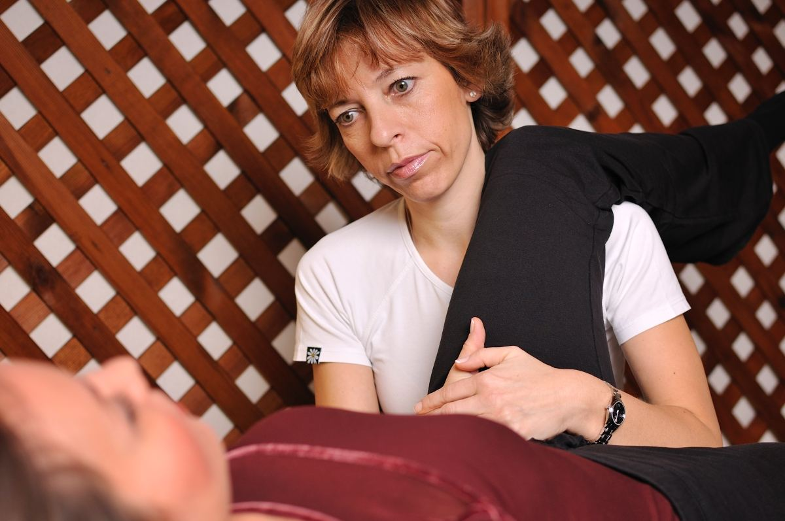
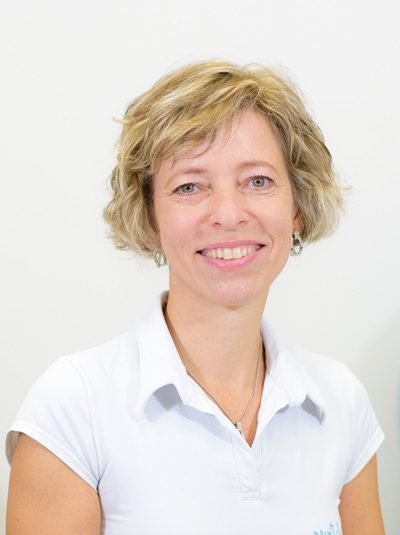
Rehabilitácia, ktorej rozumiete.
Len ak klient rozumie, čo mu je, a vie, čo môže alebo má robiť, dokáže sa vyhnúť návratu bolesti.
Centrum REVITALIS vzniklo na jeseň 2004 s jednoduchou myšlienkou: poskytovať kvalitnú a maximálne efektívnu rehabilitáciu. Lucia Merceková je spoluautorkou piatich odborných publikácií, DVD „Škola chrbta“ a jednou z prvých školiteliek Školy chrbtice na Slovensku.
Spolupracujeme s odborníkmi z neurológie, ortopédie a psychoterapie. Cieľ je vždy rovnaký: čo najrýchlejšie odstrániť bolesť a vrátiť Vás do práce, k športu či do záhrady, bez recidív.
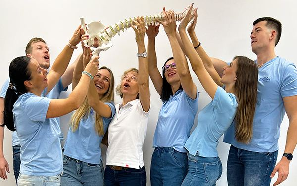
Tím REVITALISŠkoliace pracovisko pre fyzioterapeutov aj lekárov.
Starostlivosť pre každý vek.
Diagnostika
Kineziologický rozbor a dôsledné vypočutie. Často odchádzate s presne stanovenou terapiou na doma.
→ 02Diagnostika chodidla a stielky
Podologické vyšetrenie a termoplastická vložka upravená na mieru, všetko za 1,5 hodiny.
→ 03Terapia dospelých
Bolesti chrbtice, platničky, chybné držanie tela, kĺby po úrazoch a operáciách.
→ 04Terapia detí a dorastu
Držanie tela, plochá noha, skolióza. Cvičenie formou hry s množstvom pomôcok.
→ 05Terapia športovcov
Poúrazové stavy, funkčné testovanie a tréning pre Váš konkrétny šport.
→ 06Pred a pooperačná starostlivosť
Príprava na operáciu, práca s jazvou, návrat kondície a koordinácie.
→ 07Rekondičné cvičenie a redukcia váhy
Individuálny kompenzačný tréning s Pilatesom a nestabilnými plochami, bez jojo efektu.
→ 08Služby pre firmy
Ergonomické dni, Škola chrbta a kompenzačné cvičenia pre zamestnancov.
→Overené, nie módne.
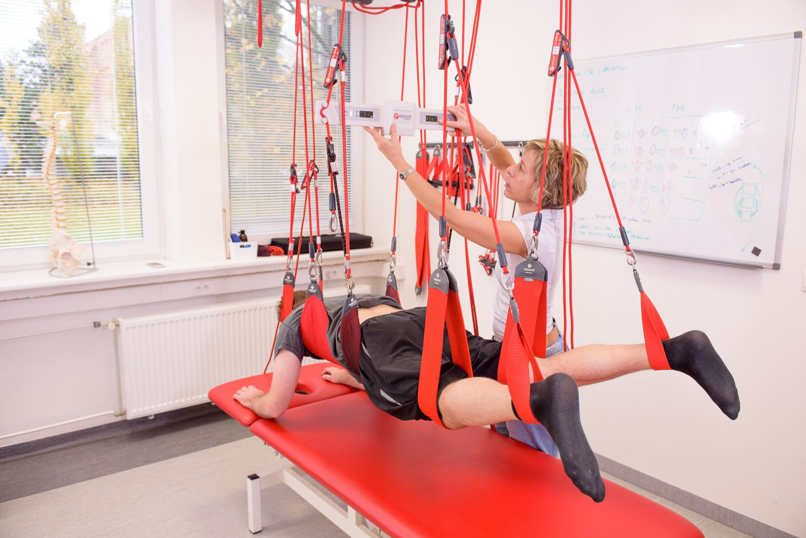
Neurac® v systéme Redcord®
Terapia v závesnom systéme aktivuje hlboké stabilizačné svaly. Lucia Merceková ju medzi prvými na Slovensku spojila s metódou McKenzie a Pilatesom.
McKenzie terapia
Mechanická diagnostika a cvičenie, ktoré zvládnete sami. Jedno z mála pracovísk s certifikovanými terapeutmi.
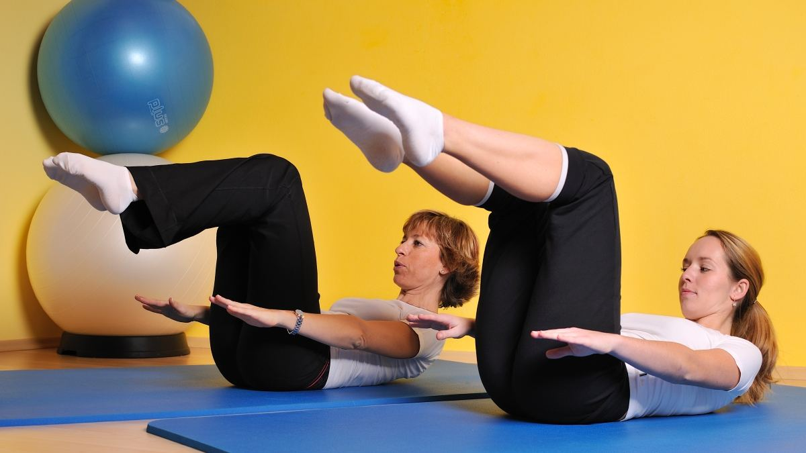
Cvičenie Pilates
Precízna technika pre stabilitu chrbtice, individuálne aj v malých skupinách.
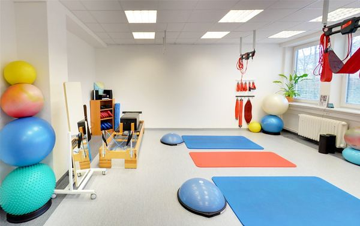
Stabilizačný a balančný tréning
Nestabilné plochy a lopty zapoja hlboké svaly, ktoré držia chrbticu.
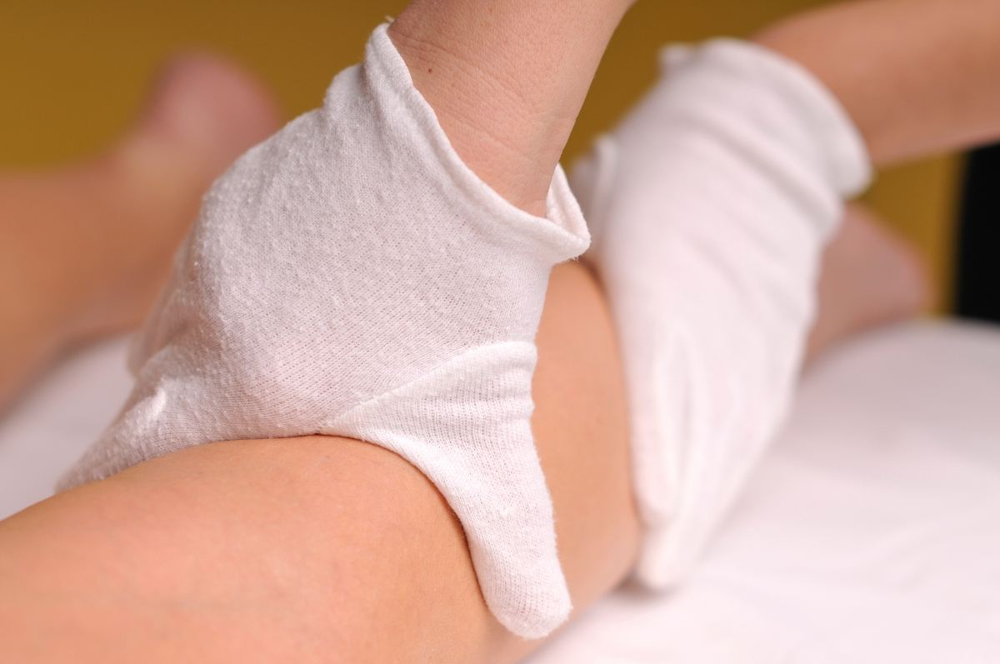
Manuálna lymfodrenáž
Jemná technika pri opuchoch, po úrazoch a operáciách.
A ďalšie
- Fyzioterapia skoliózy
- Korekcia chodidla
- Funkčný tréning
- Kyslíková terapia EWOT
- Mäkké techniky, bankovanie
- Reflexná masáž
- Elektroliečba
Ľudia, ktorí Vás vypočujú.
Členovia Slovenskej komory fyzioterapeutov a Medzinárodného inštitútu McKenzie.
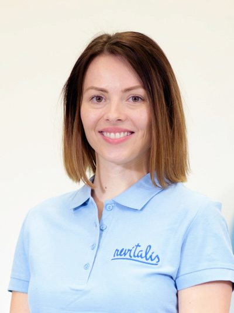
Mgr. Lenka Lechman, Cert. MDT
Fyzioterapeutka, v tíme od roku 2013
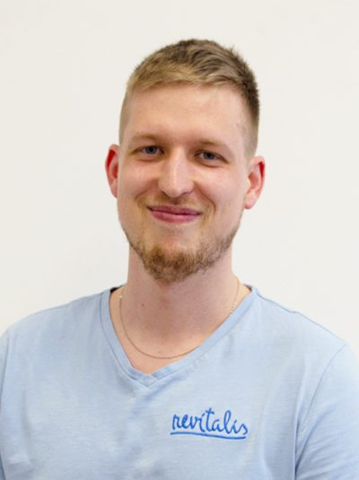
Mgr. Richard Kajtor, Cert. MDT
Diagnostika chodidla, stielky na mieru
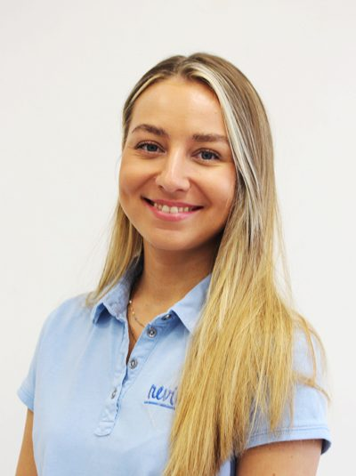
Mgr. Nina Hehejíková
Fyzioterapeutka
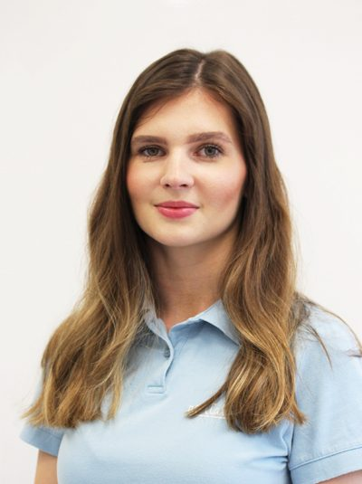
Bc. Simona Jančová
Fyzioterapeutka, terapia tanečníkov
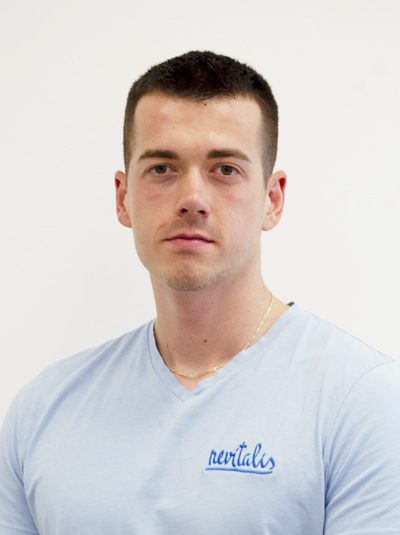
Bc. Viktor Šútor
Fyzioterapeut
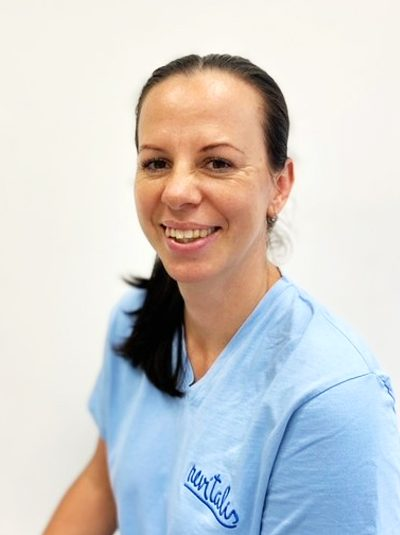
Jana Cocherová
Recepcia, prvý kontakt s klientom
Pomôcky, ktoré sme overili v praxi.
Na trhu je veľa pomôcok, ktoré sú čisto komerčné. My ponúkame len tie, ktoré roky používame s pacientmi: návleky do vody DryPro™, opierky a pomôcky na sedenie, balančné podložky aj literatúru a DVD „Škola chrbta“.
Objednáte si ich jednoducho online, s osobným odberom v centre alebo doručením domov.
Jasné ceny, bez prekvapení.
Všetky uvedené ceny sú koncové. Elektroliečba, teploliečba, dychová gymnastika, tejpovanie v rámci terapie a ďalšie techniky nie sú účtované zvlášť, sú súčasťou individuálnej fyzioterapie.
Objednať sa| Diagnostika fyzioterapeutom | 50 min | 60 € |
| Diagnostika chodidla (podologické vyšetrenie) | 50–90 min | 55 € |
| Individuálna fyzioterapia podľa odporúčania | 50 min | 45 € |
| Kontrolné vyšetrenie fyzioterapeutom | 25 min | 30 € |
| Preventívna prehliadka dorastu | 50 min | 55 € |
| Korekčné termoplastické vložky upravené na mieru | 65 € | |
| 10 individuálnych fyzioterapií / rekondičných cvičení | 400 / 360 € | |
| Kontrolné vyšetrenie chodidla | 50 min | 45 € |
| Mäkké a mobilizačné techniky | 25 / 50 min | 30 / 45 € |
| Reflexná masáž chodidiel | 50 min | 45 € |
| Manuálna lymfodrenáž | 60–90 min | 50 € |
| Individuálne rekondičné cvičenie | 50 min | 40 € |
| Skupinové fyzioterapeutické cvičenie (max. 5 osôb) | 10 € | |
| Pohybová kyslíková terapia | 15 min | 25 € |
| Trakcia | 3–20 min | 5 € |
| Tejpovanie | 5 € | |
| Fyzioterapia v domácnosti | dohodou | |
| Vystavenie nálezu, výpis zo zdravotnej dokumentácie | 10 € | |
| Stornopoplatok (menej ako 24 h pred termínom) | 30 € |
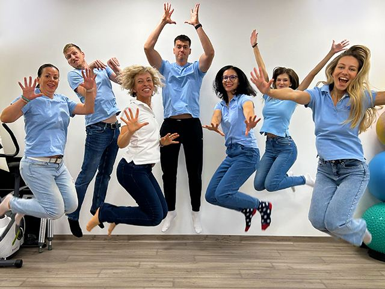
Prvý krok je rozhovor.
Napíšte nám, s čím prichádzate. Recepcia sa Vám ozve a dohodne termín. Vstupy do REVITALIS-u majú bezbariérový prístup.
- Adresa
- Rínok Rača, Rudroffova 3
(stredný trakt, poschodie 0), Bratislava - Otvorené
- Po – Št: 8:00 – 20:00
Pi: 8:00 – 15:30 - Doprava
- Autom 15 min z centra, parkovanie 120 min zdarma na P1 Rínok Rača. Električka 3 a 7 (Hybešova), autobus 56 (Kubačova).